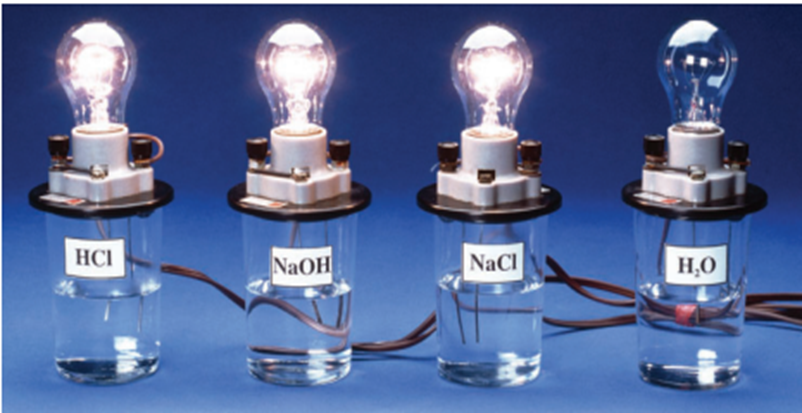

His theory explained why solutions of electrolytes conduct electricity. According to Arrhenius, when an electrolyte dissolves, its ions dissociate (come apart). This allows them to move freely in the solution and to conduct electricity. In the mid-1880s, Arrhenius modified his theory to include acids and bases. Since acidic and basic solutions also conduct electricity, he concluded that these solutions must also contain ions
|  |
Arrhenius proposed that a base is an ionic compound that dissociates into cations and hydroxide ions, OH2, as it dissolves in water. Hydroxide ions give bases their characteristic properties. Arrhenius also proposed that an acid is a molecular compound that ionizes to produce hydrogen ions in water. Ionization and dissociation are both events in which a compound breaks apart in water, causing the presence of ions in the water. However, there are subtle differences in how these processes occur.